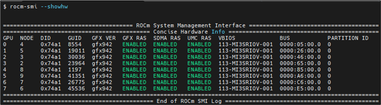
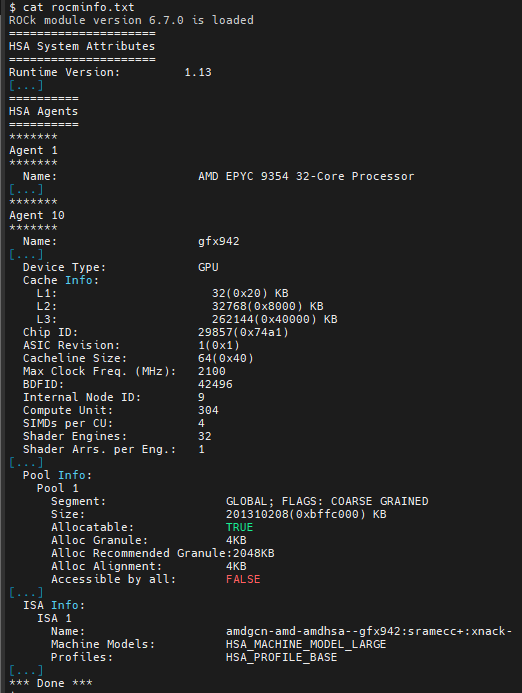

AMD Instinct MI300X system optimization#
2024-10-18
21 min read time
This document covers essential system settings and management practices required to configure your system effectively. Ensuring that your system operates correctly is the first step before delving into advanced performance tuning.
The main topics of discussion in this document are:
System settings#
This guide discusses system settings that are required to configure your system for AMD Instinct™ MI300X accelerators. It is important to ensure a system is functioning correctly before trying to improve its overall performance. In this section, the settings discussed mostly ensure proper functionality of your Instinct-based system. Some settings discussed are known to improve performance for most applications running on a MI300X system. See AMD Instinct MI300X workload optimization for how to improve performance for specific applications or workloads.
System BIOS settings#
AMD EPYC 9004-based systems#
For maximum MI300X GPU performance on systems with AMD EPYC™ 9004-series processors and AMI System BIOS, the following configuration of system BIOS settings has been validated. These settings must be used for the qualification process and should be set as default values in the system BIOS. Analogous settings for other non-AMI System BIOS providers could be set similarly. For systems with Intel processors, some settings may not apply or be available as listed in the following table.
Each row in the table details a setting but the specific location within the BIOS setup menus may be different, or the option may not be present.
BIOS setting location |
Parameter |
Value |
Comments |
|---|---|---|---|
Advanced / PCI subsystem settings |
Above 4G decoding |
Enabled |
GPU large BAR support. |
Advanced / PCI subsystem settings |
SR-IOV support |
Enabled |
Enable single root IO virtualization. |
AMD CBS / GPU common options |
Global C-state control |
Auto |
Global C-states – do not disable this menu item). |
AMD CBS / GPU common options |
CCD/Core/Thread enablement |
Accept |
May be necessary to enable the SMT control menu. |
AMD CBS / GPU common options / performance |
SMT control |
Disable |
Set to Auto if the primary application is not compute-bound. |
AMD CBS / DF common options / memory addressing |
NUMA nodes per socket |
Auto |
Auto = NPS1. At this time, the other options for NUMA nodes per socket should not be used. |
AMD CBS / DF common options / memory addressing |
Memory interleaving |
Auto |
Depends on NUMA nodes (NPS) setting. |
AMD CBS / DF common options / link |
4-link xGMI max speed |
32 Gbps |
Auto results in the speed being set to the lower of the max speed the motherboard is designed to support and the max speed of the CPU in use. |
AMD CBS / NBIO common options |
IOMMU |
Enabled |
|
AMD CBS / NBIO common options |
PCIe ten bit tag support |
Auto |
|
AMD CBS / NBIO common options / SMU common options |
Determinism control |
Manual |
|
AMD CBS / NBIO common options / SMU common options |
Determinism slider |
Power |
|
AMD CBS / NBIO common options / SMU common options |
cTDP control |
Manual |
Set cTDP to the maximum supported by the installed CPU. |
AMD CBS / NBIO common options / SMU common options |
cTDP |
400 |
Value in watts. |
AMD CBS / NBIO common options / SMU common options |
Package power limit control |
Manual |
Set package power limit to the maximum supported by the installed CPU. |
AMD CBS / NBIO common options / SMU common options |
Package power limit |
400 |
Value in watts. |
AMD CBS / NBIO common options / SMU common options |
xGMI link width control |
Manual |
Set package power limit to the maximum supported by the installed CPU. |
AMD CBS / NBIO common options / SMU common options |
xGMI force width control |
Force |
|
AMD CBS / NBIO common options / SMU common options |
xGMI force link width |
2 |
|
AMD CBS / NBIO common options / SMU common options |
xGMI max speed |
Auto |
Auto results in the speed being set to the lower of the max speed the motherboard is designed to support and the max speed of the CPU in use. |
AMD CBS / NBIO common options / SMU common options |
APBDIS |
1 |
Disable DF (data fabric) P-states |
AMD CBS / NBIO common options / SMU common options |
DF C-states |
Auto |
|
AMD CBS / NBIO common options / SMU common options |
Fixed SOC P-state |
P0 |
|
AMD CBS / security |
TSME |
Disabled |
Memory encryption |
GRUB settings#
In any modern Linux distribution, the /etc/default/grub file is used to
configure GRUB. In this file, the string assigned to GRUB_CMDLINE_LINUX is
the command line parameters that Linux uses during boot.
Appending strings via Linux command line#
It is recommended to append the following strings in GRUB_CMDLINE_LINUX.
pci=realloc=offWith this setting Linux is able to unambiguously detect all GPUs of the MI300X-based system because this setting disables the automatic reallocation of PCI resources. It’s used when Single Root I/O Virtualization (SR-IOV) Base Address Registers (BARs) have not been allocated by the BIOS. This can help avoid potential issues with certain hardware configurations.
iommu=ptThe
iommu=ptsetting enables IOMMU pass-through mode. When in pass-through mode, the adapter does not need to use DMA translation to the memory, which can improve performance.
IOMMU is a system specific IO mapping mechanism and can be used for DMA mapping and isolation. This can be beneficial for virtualization and device assignment to virtual machines. It is recommended to enable IOMMU support.
For a system that has AMD host CPUs add this to GRUB_CMDLINE_LINUX:
iommu=pt
Otherwise, if the system has Intel host CPUs add this instead to
GRUB_CMDLINE_LINUX:
intel_iommu=on iommu=pt
Update GRUB#
Update GRUB to use the modified configuration:
sudo grub2-mkconfig -o /boot/grub2/grub.cfg
On some Debian systems, the grub2-mkconfig command may not be available. Instead,
check for the presence of grub-mkconfig. Additionally, verify that you have the
correct version by using the following command:
grub-mkconfig -version
Operating system settings#
CPU core states (C-states)#
There are several core states (C-states) that an AMD EPYC CPU can idle within:
C0: active. This is the active state while running an application.
C1: idle. This state consumes less power compared to C0, but can quickly return to the active state (C0) with minimal latency.
C2: idle and power-gated. This is a deeper sleep state and will have greater latency when moving back to the active (C0) state as compared to when the CPU is coming out of C1.
Disabling C2 is important for running with a high performance, low-latency
network. To disable the C2 state, install the cpupower tool using your Linux
distribution’s package manager. cpupower is not a base package in most Linux
distributions. The specific package to be installed varies per Linux
distribution.
sudo apt install linux-tools-common
sudo yum install cpupowerutils
sudo zypper install cpupower
Now, to disable power-gating on all cores run the following on Linux systems, run the following command.
cpupower idle-set -d 2
/proc and /sys file system settings#
Disable NUMA auto-balancing#
The NUMA balancing feature allows the OS to scan memory and attempt to migrate
to a DIMM that is logically closer to the cores accessing it. This causes an
overhead because the OS is second-guessing your NUMA allocations but may be
useful if the NUMA locality access is very poor. Applications can therefore, in
general, benefit from disabling NUMA balancing; however, there are workloads where
doing so is detrimental to performance. Test this setting
by toggling the numa_balancing value and running the application; compare
the performance of one run with this set to 0 and another run with this to
1.
Run the command cat /proc/sys/kernel/numa_balancing to check the current
NUMA (Non-Uniform Memory Access) settings. Output 0 indicates this
setting is disabled. If no output or output is 1, run the command
sudo sh -c \\'echo 0 > /proc/sys/kernel/numa_balancing to disable it.
For these settings, the env_check.sh script automates setting, resetting,
and checking your environments. Find the script at
ROCm/triton.
Run the script as follows to set or reset the settings:
./env_check.sh [set/reset/check]
Tip
Use ./env_check.sh -h for help info.
Automate disabling NUMA auto-balance using Cron#
The Disable NUMA auto-balancing section describes the command to disable NUMA
auto-balance. To automate the command with Cron, edit the crontab
configuration file for the root user:
sudo crontab -e
Add the following Cron entry to run the script at a specific interval:
@reboot sh -c 'echo 0 > /proc/sys/kernel/numa_balancing'
Save the file and exit the text editor.
Optionally, restart the system to apply changes by issuing
sudo reboot.Verify your new configuration.
cat /proc/sys/kernel/numa_balancing
The
/proc/sys/kernel/numa_balancingfile controls NUMA balancing in the Linux kernel. If the value in this file is set to0, the NUMA balancing is disabled. If the value is set to1, NUMA balancing is enabled.
Note
Disabling NUMA balancing should be done cautiously and for specific reasons, such as performance optimization or addressing particular issues. Always test the impact of disabling NUMA balancing in a controlled environment before applying changes to a production system.
Environment variables#
HIP provides an environment variable export HIP_FORCE_DEV_KERNARG=1 that
can put arguments of HIP kernels directly to device memory to reduce the
latency of accessing those kernel arguments. It can improve performance by 2 to
3 µs for some kernels.
It is recommended to set the following environment variable:
export HIP_FORCE_DEV_KERNARG=1
Note
This is the default option as of ROCm 6.2.
Change affinity of ROCm helper threads#
This change prevents internal ROCm threads from having their CPU core affinity mask set to all CPU cores available. With this setting, the threads inherit their parent’s CPU core affinity mask. If you have any questions regarding this setting, contact your MI300A platform vendor. To enable this setting, enter the following command:
export HSA_OVERRIDE_CPU_AFFINITY_DEBUG=0
IOMMU configuration – systems with 256 CPU threads#
For systems that have 256 logical CPU cores or more, setting the input-output
memory management unit (IOMMU) configuration to disabled can limit the
number of available logical cores to 255. The reason is that the Linux kernel
disables X2APIC in this case and falls back to Advanced Programmable Interrupt
Controller (APIC), which can only enumerate a maximum of 255 (logical) cores.
If SMT is enabled by setting CCD/Core/Thread Enablement > SMT Control to
enable, you can apply the following steps to the system to enable all
(logical) cores of the system:
In the server BIOS, set IOMMU to
Enabled.When configuring the GRUB boot loader, add the following argument for the Linux kernel:
iommu=pt.Update GRUB.
Reboot the system.
Verify IOMMU passthrough mode by inspecting the kernel log via
dmesg:dmesg | grep iommu
[...]
[ 0.000000] Kernel command line: [...] iommu=pt
[...]
Once the system is properly configured, ROCm software can be installed.
System management#
To optimize system performance, it’s essential to first understand the existing system configuration parameters and settings. ROCm offers several CLI tools that can provide system-level information, offering valuable insights for optimizing user applications.
For a complete guide on how to install, manage, or uninstall ROCm on Linux, refer to Quick start installation guide. For verifying that the installation was successful, refer to the Post-installation instructions. Should verification fail, consult System debugging.
Hardware verification with ROCm#
The ROCm platform provides tools to query the system structure. These include ROCm SMI and ROCm Bandwidth Test.
ROCm SMI#
To query your GPU hardware, use the rocm-smi command. ROCm SMI lists
GPUs available to your system – with their device ID and their respective
firmware (or VBIOS) versions.
The following screenshot shows that all 8 GPUs of MI300X are recognized by ROCm. Performance of an application could be otherwise suboptimal if, for example, out of the 8 GPUs only 5 of them are recognized.
To see the system structure, the localization of the GPUs in the system, and the
fabric connections between the system components, use the command
rocm-smi --showtopo.
The first block of the output shows the distance between the GPUs similar to
what the numactl command outputs for the NUMA domains of a system. The
weight is a qualitative measure for the “distance” data must travel to reach one
GPU from another one. While the values do not carry a special, or “physical”
meaning, the higher the value the more hops are needed to reach the destination
from the source GPU. This information has performance implication for a
GPU-based application that moves data among GPUs. You can choose a minimum
distance among GPUs to be used to make the application more performant.
The second block has a matrix named Hops between two GPUs, where:
1means the two GPUs are directly connected with xGMI,2means both GPUs are linked to the same CPU socket and GPU communications will go through the CPU, and3means both GPUs are linked to different CPU sockets so communications will go through both CPU sockets. This number is one for all GPUs in this case since they are all connected to each other through the Infinity Fabric links.
The third block outputs the link types between the GPUs. This can either be
XGMI for AMD Infinity Fabric links or PCIE for PCIe Gen5 links.
The fourth block reveals the localization of a GPU with respect to the NUMA organization of the shared memory of the AMD EPYC processors.
To query the compute capabilities of the GPU devices, use rocminfo command. It lists specific details about the GPU devices, including but not limited to the number of compute units, width of the SIMD pipelines, memory information, and instruction set architecture (ISA). The following is the truncated output of the command:
For a complete list of architecture (such as CDNA3) and LLVM target names (such gfx942 for MI300X), refer to the Supported GPUs section of the System requirements for Linux page.
Deterministic clock#
Use the command rocm-smi --setperfdeterminism 1900 to set the max clock
speed up to 1900 MHz instead of the default 2100 MHz. This can reduce
the chance of a PCC event lowering the attainable GPU clocks. This
setting will not be required for new IFWI releases with the production
PRC feature. Restore this setting to its default value with the
rocm-smi -r command.
ROCm Bandwidth Test#
The section Hardware verification with ROCm showed how the command
rocm-smi --showtopo can be used to view the system structure and how the
GPUs are connected. For more details on the link bandwidth,
rocm-bandwidth-test can run benchmarks to show the effective link bandwidth
between the components of the system.
You can install ROCm Bandwidth Test, which can test inter-device bandwidth, using the following package manager commands:
sudo apt install rocm-bandwidth-test
sudo yum install rocm-bandwidth-test
sudo zypper install rocm-bandwidth-test
Alternatively, you can download the source code from ROCm/rocm_bandwidth_test and build from source.
The output will list the available compute devices (CPUs and GPUs), including
their device ID and PCIe ID. The following screenshot is an example of the
beginning part of the output of running rocm-bandwidth-test. It shows the
devices present in the system.
The output will also show a matrix that contains a 1 if a device can
communicate to another device (CPU and GPU) of the system and it will show the
NUMA distance – similar to rocm-smi.
Inter-device distance:
Inter-device distance#
Inter-device NUMA distance:
Inter-device NUMA distance#
The output also contains the measured bandwidth for unidirectional and bidirectional transfers between the devices (CPU and GPU):
Unidirectional bandwidth:
Unidirectional bandwidth#
Bidirectional bandwidth
Bidirectional bandwidth#
Abbreviations#
- AMI
American Megatrends International
- APBDIS
Algorithmic Performance Boost Disable
- ATS
Address Translation Services
- BAR
Base Address Register
- BIOS
Basic Input/Output System
- CBS
Common BIOS Settings
- CLI
Command Line Interface
- CPU
Central Processing Unit
- cTDP
Configurable Thermal Design Power
- DDR5
Double Data Rate 5 DRAM
- DF
Data Fabric
- DIMM
Dual In-line Memory Module
- DMA
Direct Memory Access
- DPM
Dynamic Power Management
- GPU
Graphics Processing Unit
- GRUB
Grand Unified Bootloader
- HPC
High Performance Computing
- IOMMU
Input-Output Memory Management Unit
- ISA
Instruction Set Architecture
- LCLK
Link Clock Frequency
- NBIO
North Bridge Input/Output
- NUMA
Non-Uniform Memory Access
- PCC
Power Consumption Control
- PCI
Peripheral Component Interconnect
- PCIe
PCI Express
- POR
Power-On Reset
- SIMD
Single Instruction, Multiple Data
- SMT
Simultaneous Multi-threading
- SMI
System Management Interface
- SOC
System On Chip
- SR-IOV
Single Root I/O Virtualization
- TP
Tensor Parallelism
- TSME
Transparent Secure Memory Encryption
- X2APIC
Extended Advanced Programmable Interrupt Controller
- xGMI
Inter-chip Global Memory Interconnect